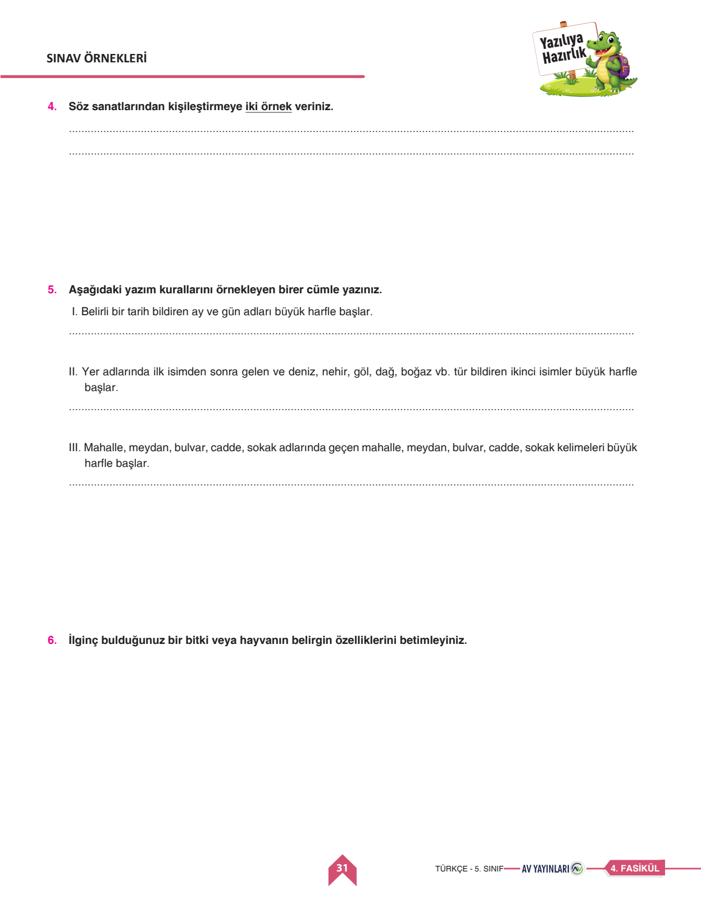

📚 5. Sınıf Türkçe 1. Dönem 1. Yazılı
Orijinal Sınav Kağıdı Üzerinde Soru Soru Çözüm • 6 Sorunun Tamamı • PC ve Mobilde Doğal Seslendirme
0
Mevcut Puan / 100
Soru 1
Pusula Metninden Sözcük Bulma
15 Puan
📌 Öğretmen Çözümü & Model Cevap:
1. İcat (Bilinmeyen yeni bir bulguya ulaşma, buluş)
2. Yosun (Suda veya taşların üzerinde yetişen ilkel bitkiler)
3. Mıknatıs (Demiri çeken oksit; demirkapan)
2. Yosun (Suda veya taşların üzerinde yetişen ilkel bitkiler)
3. Mıknatıs (Demiri çeken oksit; demirkapan)
Bu sorudan aldığın puan:
Soru 2
Yapay Zeka ve Çevre Metninden Sonuç Çıkarma
20 Puan
📌 Öğretmen Çözümü & Model Cevap:
Metinden Çıkarılan Sonuç:
Yapay zekâ sunucularının soğutulması yüksek miktarda su ve elektrik tüketimine neden olur. Bu yüzden gereksiz uzun sohbetlerden kaçınmalı, yapay zekâya doğrudan ve net komutlar vererek doğal kaynakların israfını önlemeliyiz.
Yapay zekâ sunucularının soğutulması yüksek miktarda su ve elektrik tüketimine neden olur. Bu yüzden gereksiz uzun sohbetlerden kaçınmalı, yapay zekâya doğrudan ve net komutlar vererek doğal kaynakların israfını önlemeliyiz.
Bu sorudan aldığın puan:
Soru 3
Satranç Metninin Anahtar Kelimeleri
15 Puan
📌 Öğretmen Çözümü & Model Cevap:
Anahtar Kelimeler:
• Satranç
• Zihinsel / Bilişsel Gelişim (veya: Stratejik Düşünme, Planlama kabul edilir).
• Satranç
• Zihinsel / Bilişsel Gelişim (veya: Stratejik Düşünme, Planlama kabul edilir).
Bu sorudan aldığın puan:

Soru 4
Söz Sanatları: Kişileştirmeye İki Örnek
15 Puan
📌 Öğretmen Çözümü & Model Cevap:
Örnek Cümleler (Öğrenci Modeli):
1. 'Rüzgâr bütün gece penceremize öfkeyle vurdu.' (Öfkelenmek insana aittir, rüzgara verilmiştir.)
2. 'Sabah güneş açınca çiçekler neşeyle birbirine fısıldadı.' (Fısıldaşmak insana aittir.)
1. 'Rüzgâr bütün gece penceremize öfkeyle vurdu.' (Öfkelenmek insana aittir, rüzgara verilmiştir.)
2. 'Sabah güneş açınca çiçekler neşeyle birbirine fısıldadı.' (Fısıldaşmak insana aittir.)
Bu sorudan aldığın puan:
Soru 5
Kritik Yazım Kurallarını Örneklendirme
20 Puan
📌 Öğretmen Çözümü & Model Cevap:
I. Belirli Tarih Kuralı: 'Kardeşim 12 Mayıs 2018 Cumartesi günü dünyaya geldi.'
II. Coğrafi Yer Adı: 'Tatilimizi Van Gölü kıyısında geçirdik.'
III. Cadde ve Sokak: 'Okulumuz Cumhuriyet Bulvarı, Menekşe Sokak üzerindedir.'
II. Coğrafi Yer Adı: 'Tatilimizi Van Gölü kıyısında geçirdik.'
III. Cadde ve Sokak: 'Okulumuz Cumhuriyet Bulvarı, Menekşe Sokak üzerindedir.'
Bu sorudan aldığın puan:
Soru 6
Bitki veya Hayvan Betimlemesi
15 Puan
📌 Öğretmen Çözümü & Model Cevap:
Örnek Betimleme (Bukalemun):
Bukalemunlar, bulundukları ortama göre saniyeler içinde renk değiştirebilen olağanüstü sürüngenlerdir. Birbirinden bağımsız 360 derece dönebilen gözleri ve vücut boyundan daha uzun yapışkan dilleri sayesinde avlarını hiç hareket etmeden yakalayabilirler.
Bukalemunlar, bulundukları ortama göre saniyeler içinde renk değiştirebilen olağanüstü sürüngenlerdir. Birbirinden bağımsız 360 derece dönebilen gözleri ve vücut boyundan daha uzun yapışkan dilleri sayesinde avlarını hiç hareket etmeden yakalayabilirler.
Bu sorudan aldığın puan:
📖 1. Sözcükte Anlam ve Bağlam
- Gerçek Anlam: Kelimenin ilk temel anlamı.
- Mecaz Anlam: Soyutlaşmış ve gerçek anlamından uzaklaşmış kullanım.
- Terim Anlam: Belirli bir bilim, meslek ve sanata özgü kavramlar (icat, yosun, mıknatıs).
🎭 2. Söz Sanatları: Kişileştirme (Teşhis)
- İnsana özgü niteliklerin (sevinme, kızma, gülme) insan dışı varlıklara verilmesidir.
✍️ 3. Büyük Harflerin Kullanımı
- Belirli tarih: 29 Ekim 1923 Cuma günü.
- Yer adı tür bildirimi: Van Gölü, Ağrı Dağı, Tuna Nehri.
- Mahalle, cadde, sokak: Cumhuriyet Mahallesi, Menekşe Sokak.